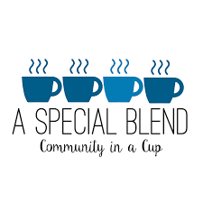

Service Information
- Horsepower Therapeutic Learning (February-April 2017): In a six-week therapeutic horseback riding session, I worked with special needs children to increase their confidence, speech, and mobility skills.
- Greensboro Science Center (Summer 2017): I was involved in the teen summer volunteer program, working in shifts at stations to the visitors’ experiences by teaching them specifically about the animals in the zoo and aquarium areas.
- First Presbyterian Church Hot Dish and Hope (Fall 2017-current): I work with a team of volunteers to prepare a dining hall and serve free meals/beverages to the homeless and hungry in Greensboro. Recently, I have become a co-leader for one meal a month, responsible for coordinating volunteers and delegating jobs.
- Gibsonville Elementary (October 2017): For two school days, I went to Gibsonville Elementary and assisted teachers by working one-on-one with below-grade level students to help them catch up, as well as sorting/organizing papers in the main office.
- Weekday Preschool Center (October 2017): I helped as an assistant teacher for a class of 3-4 year olds on a day when a teacher was absent.
- A Special Blend (November 2018-current): I volunteer at a coffee shop which employs adults with special needs. As a volunteer, I assist the employees in completing their tasks and help keep them focused on their jobs.

Home Page
Continue to Leadership Information
Continue to Extracurricular Information